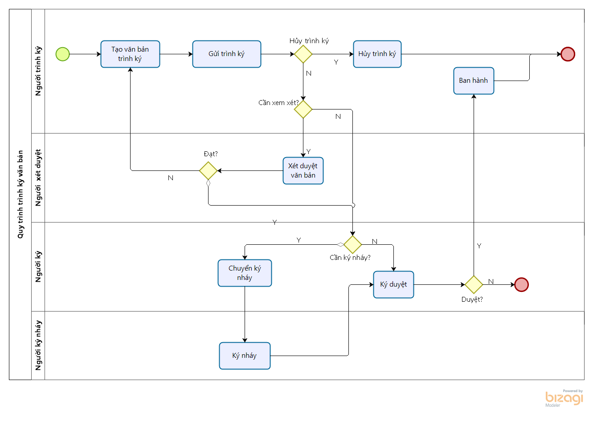

ỨNG DỤNG KÝ SỐ
Ứng dụng Ký số cung cấp dịch vụ ký điện tử với công nghệ chữ ký số giúp việc ký kết văn bản giấy tờ nhanh chóng, kịp thời mà vẫn đảm bảo các yếu tố xác thực, bảo mật. Lưu trữ trực tuyến giúp cho quá trình tìm kiếm, truy xuất các văn bản ký kết một cách nhanh chóng, dễ dàng hơn.
Ứng dụng Ký số là công cụ hỗ trợ cho phép:
-
Tạo và trình ký cùng lúc một hoặc nhiều văn bản trực tuyến nhanh chóng, dễ dàng. Hỗ trợ trình ký với các định dạng văn bản pdf, doc, excel, ppt.
-
Ký điện tử với USB token ngay khi được trình ký. Ảnh chân ký tương ứng của người ký sẽ được thêm vào vị trí cần thiết
-
Tích hợp với Ứng dụng Tài liệu sẽ hiệu quả trong lưu trữ quản lý văn bản sau ký và ban hành.
-
Thông báo tới người liên quan khi có sự thay đổi trạng thái văn bản trình ký nhằm đảm bảo tiến độ công việc
-
Ngoài ra, ứng dụng cung cấp nhiều tiện ích khác như: đọc văn bản trực tiếp trên ứng dụng, đổi lại người ký khi cần thiết, chuyển yêu cầu ký nháy cho văn bản ...
Mô tả nghiệp vụ

Mô tả nghiệp vụ
Quá trình trình ký văn bản sẽ thực hiện theo quy trình sau:
- Người trình ký tạo văn bản trên ứng dụng ký số và trình ký tới danh sách người ký.
- Người trình ký có thể hủy luồng trình ký khi văn bản đang trình ký nhưng chưa có ai ký duyệt
- Trường hợp văn bản gửi tới cần phải xét duyệt trước ký, người xét duyệt cần xét duyệt văn bản trước.
- Người ký gửi yêu cầu ký nháy tới người khác trước khi ký duyệt
- Người được yêu cầu ký nháy thực hiện ký nháy hoặc từ chối ký nháy
- Người ký thực hiện ký duyệt hoặc từ chối ký văn bản.
- Văn bản sau ký duyệt được ban hành và lưu trữ văn bản.